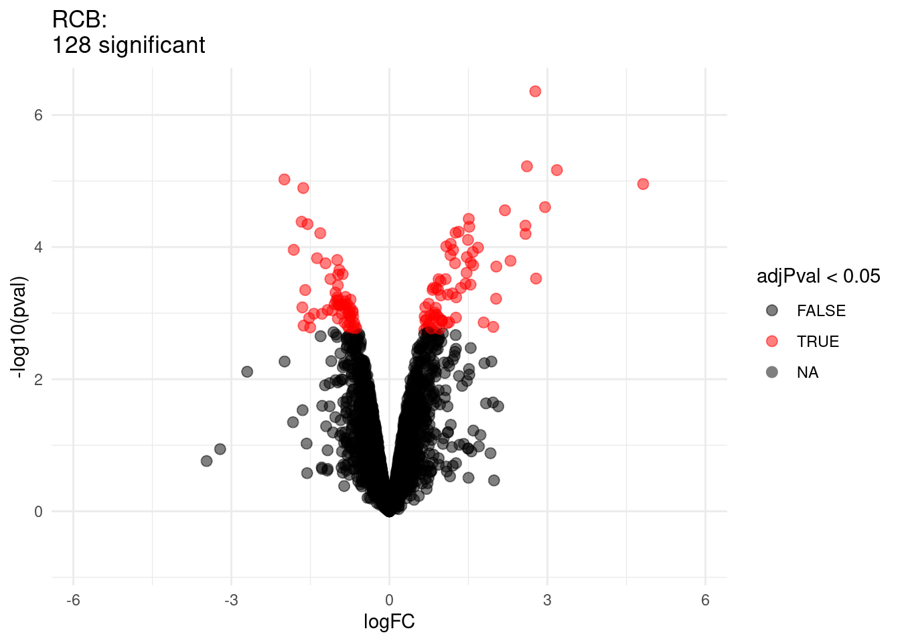
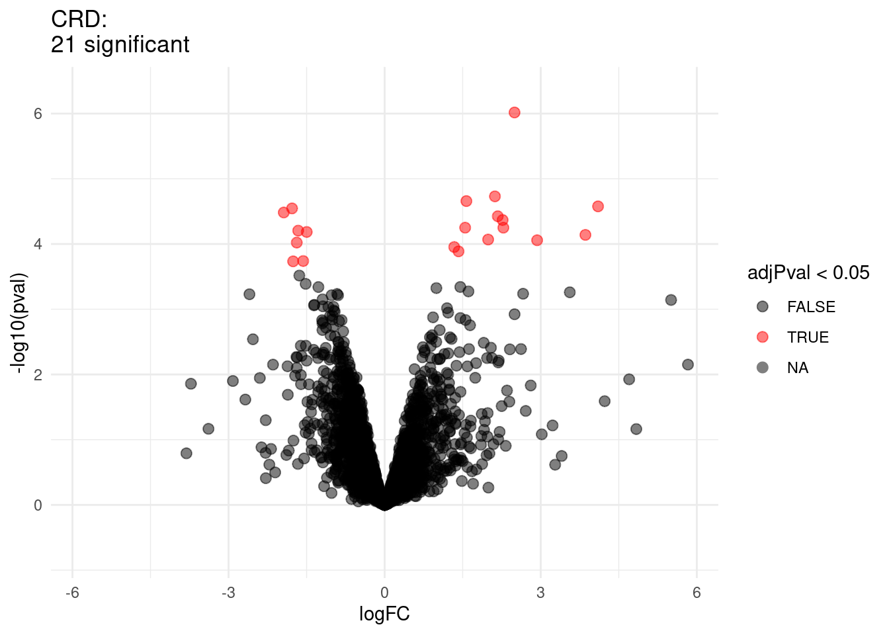
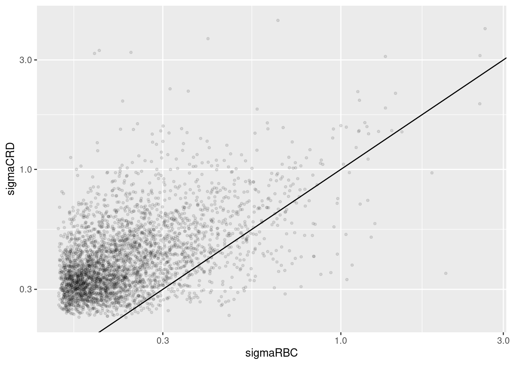

Statistical Methods for Quantitative MS-based Proteomics: Part II. Differential Abundance Analysis
Lieven Clement
statOmics, Ghent University

This is part of the online course Proteomics Data Analysis (PDA)
Outline
- Francisella tularensis Example
- Hypothesis testing
- Multiple testing
- Moderated statistics
- Experimental design
Note, that the R-code is included for learners who are aiming to develop R/markdown scripts to automate their quantitative proteomics data analyses. According to the target audience of the course we either work with a graphical user interface (GUI) in a R/shiny App msqrob2gui (e.g. Proteomics Bioinformatics course of the EBI and the Proteomics Data Analysis course at the Gulbenkian institute) or with R/markdowns scripts (e.g. Bioinformatics Summer School at UCLouvain or the Statistical Genomics Course at Ghent University).
1 Francisella tularensis experiment


- Pathogen: causes tularemia
- Metabolic adaptation key for intracellular life cycle of pathogenic microorganisms.
- Upon entry into host cells quick phasomal escape and active multiplication in cytosolic compartment.
- Franciscella is auxotroph for several amino acids, including arginine.
- Inactivation of arginine transporter delayed bacterial phagosomal escape and intracellular multiplication.
- Experiment to assess difference in proteome using 3 WT vs 3 ArgP KO mutants
1.1 Import the data in R
Click to see code
- Load libraries
library(tidyverse)
library(limma)
library(QFeatures)
library(msqrob2)
library(plotly)
library(ggplot2)- We use a peptides.txt file from MS-data quantified with maxquant that contains MS1 intensities summarized at the peptide level.
peptidesFile <- "https://raw.githubusercontent.com/statOmics/PDA/data/quantification/francisella/peptides.txt"- Maxquant stores the intensity data for the different samples in columnns that start with Intensity. We can retreive the column names with the intensity data with the code below:
ecols <- grep("Intensity\\.", names(read.delim(peptidesFile)))- Read the data and store it in QFeatures object
pe <- readQFeatures(
table = peptidesFile,
fnames = 1,
ecol = ecols,
name = "peptideRaw", sep="\t")- Update data with information on design
colData(pe)$genotype <- pe[[1]] %>%
colnames %>%
substr(12,13) %>%
as.factor %>%
relevel("WT")
pe %>% colData## DataFrame with 6 rows and 1 column
## genotype
## <factor>
## Intensity.1WT_20_2h_n3_3 WT
## Intensity.1WT_20_2h_n4_3 WT
## Intensity.1WT_20_2h_n5_3 WT
## Intensity.3D8_20_2h_n3_3 D8
## Intensity.3D8_20_2h_n4_3 D8
## Intensity.3D8_20_2h_n5_3 D81.2 Preprocessing
Click to see code to log-transfrom the data
- Log transform
- Calculate number of non zero intensities for each peptide
rowData(pe[["peptideRaw"]])$nNonZero <- rowSums(assay(pe[["peptideRaw"]]) > 0)- Peptides with zero intensities are missing peptides and should be
represent with a
NAvalue rather than0.
pe <- zeroIsNA(pe, "peptideRaw") # convert 0 to NA- Logtransform data with base 2
pe <- logTransform(pe, base = 2, i = "peptideRaw", name = "peptideLog")- Filtering
- Handling overlapping protein groups
pe <- filterFeatures(pe, ~ Proteins %in% smallestUniqueGroups(rowData(pe[["peptideLog"]])$Proteins))- Remove reverse sequences (decoys) and contaminants. Note that this is indicated by the column names Reverse and depending on the version of maxQuant with Potential.contaminants or Contaminants.
pe <- filterFeatures(pe,~Reverse != "+")
pe <- filterFeatures(pe,~ Contaminant != "+")- Drop peptides that were only identified in one sample
pe <- filterFeatures(pe,~ nNonZero >=2)
nrow(pe[["peptideLog"]])## [1] 6525We keep 6525 peptides upon filtering.
- Normalization by median centering
pe <- normalize(pe,
i = "peptideLog",
name = "peptideNorm",
method = "center.median")- Summarization. We use the standard sumarisation in aggregateFeatures, which is a robust summarisation method.
pe <- aggregateFeatures(pe,
i = "peptideNorm",
fcol = "Proteins",
na.rm = TRUE,
name = "protein")## Your quantitative and row data contain missing values. Please read the
## relevant section(s) in the aggregateFeatures manual page regarding the
## effects of missing values on data aggregation.Plot of preprocessed data
pe[["peptideNorm"]] %>%
assay %>%
as.data.frame() %>%
gather(sample, intensity) %>%
mutate(genotype = colData(pe)[sample,"genotype"]) %>%
ggplot(aes(x = intensity,group = sample,color = genotype)) +
geom_density() +
ggtitle("Peptide-level")## Warning: Removed 7561 rows containing non-finite values (stat_density).
pe[["protein"]] %>%
assay %>%
as.data.frame() %>%
gather(sample, intensity) %>%
mutate(genotype = colData(pe)[sample,"genotype"]) %>%
ggplot(aes(x = intensity,group = sample,color = genotype)) +
geom_density() +
ggtitle("Protein-level")## Warning: Removed 428 rows containing non-finite values (stat_density).
1.3 Summarized data structure
1.3.1 Design
pe %>%
colData %>%
knitr::kable()| genotype | |
|---|---|
| Intensity.1WT_20_2h_n3_3 | WT |
| Intensity.1WT_20_2h_n4_3 | WT |
| Intensity.1WT_20_2h_n5_3 | WT |
| Intensity.3D8_20_2h_n3_3 | D8 |
| Intensity.3D8_20_2h_n4_3 | D8 |
| Intensity.3D8_20_2h_n5_3 | D8 |
- WT vs KO
- 3 vs 3 repeats
1.3.2 Summarized intensity matrix
pe[["protein"]] %>% assay() %>% head() %>% knitr::kable()| Intensity.1WT_20_2h_n3_3 | Intensity.1WT_20_2h_n4_3 | Intensity.1WT_20_2h_n5_3 | Intensity.3D8_20_2h_n3_3 | Intensity.3D8_20_2h_n4_3 | Intensity.3D8_20_2h_n5_3 | |
|---|---|---|---|---|---|---|
| WP_003013731 | -0.2748775 | -0.0856247 | 0.1595370 | -0.2809009 | 0.0035526 | 0.0567110 |
| WP_003013860 | NA | NA | -0.2512039 | NA | NA | -0.4865646 |
| WP_003013909 | -0.6851118 | -0.8161658 | -0.7557906 | -0.4591476 | -0.5449424 | -0.4962482 |
| WP_003014068 | 0.6495386 | 0.8522239 | 1.1344852 | 0.5459176 | 0.9187714 | 0.5974741 |
| WP_003014122 | -0.7630863 | -1.0430741 | -0.8091715 | -1.1743951 | -1.1924725 | -1.2565893 |
| WP_003014123 | -0.2051672 | -0.3361704 | -0.2151930 | -0.3855747 | -0.2802011 | -0.5801771 |
- 1115 proteins
1.3.3 Hypothesis testing: a single protein

1.3.3.1 T-test
\[ \log_2 \text{FC} = \bar{y}_{p1}-\bar{y}_{p2} \]
\[ T_g=\frac{\log_2 \text{FC}}{\text{se}_{\log_2 \text{FC}}} \]
\[ T_g=\frac{\widehat{\text{signal}}}{\widehat{\text{Noise}}} \]
If we can assume equal variance in both treatment groups:
\[ \text{se}_{\log_2 \text{FC}}=\text{SD}\sqrt{\frac{1}{n_1}+\frac{1}{n_2}} \]
WP_003023392 <- data.frame(
intensity = assay(pe[["protein"]]["WP_003023392",]) %>% c(),
genotype = colData(pe)[,1])
WP_003023392 %>%
ggplot(aes(x=genotype,y=intensity)) +
geom_point() +
ggtitle("Protein WP_003023392")
\[ t=\frac{\log_2\widehat{\text{FC}}}{\text{se}_{\log_2\widehat{\text{FC}}}}=\frac{-1.43}{0.0577}=-24.7 \]
Is t = -24.7 indicating that there is an effect?
How likely is it to observe t = -24.7 when there is no effect of the argP KO on the protein expression?
1.3.3.2 Null hypothesis (\(H_0\)) and alternative hypothesis (\(H_1\))
With data we can never prove a hypothesis (falsification principle of Popper)
With data we can only reject a hypothesis
In general we start from alternative hypothese \(H_1\): we want to show an effect of the KO on a protein
- But, we will assess this by falsifying the opposite:
\(H_0\): On average the protein abundance in WT is equal to that in KO<-
t.test(intensity ~ genotype, data = WP_003023392, var.equal=TRUE)##
## Two Sample t-test
##
## data: intensity by genotype
## t = 24.747, df = 4, p-value = 1.582e-05
## alternative hypothesis: true difference in means between group WT and group D8 is not equal to 0
## 95 percent confidence interval:
## 1.267666 1.588058
## sample estimates:
## mean in group WT mean in group D8
## -0.1821147 -1.6099769How likely is it to observe an equal or more extreme effect than the one observed in the sample when the null hypothesis is true?
When we make assumptions about the distribution of our test statistic we can quantify this probability: p-value. The p-value will only be calculated correctly if the underlying assumptions hold!
When we repeat the experiment, the probability to observe a fold change for this gene that is more extreme than a 2.69 fold (\(\log_2 FC=-1.43\)) down or up regulation by random change (if \(H_0\) is true) is 16 out of 1 000 000.
If the p-value is below a significance threshold \(\alpha\) we reject the null hypothesis. We control the probability on a false positive result at the \(\alpha\)-level (type I error)
Note, that the p-values are uniform under the null hypothesis, i.e. when \(H_0\) is true all p-values are equally likely.
1.4 Multiple hypothesis testing
Consider testing DA for all \(m=1066\) proteins simultaneously
What if we assess each individual test at level \(\alpha\)? \(\rightarrow\) Probability to have a false positive (FP) among all m simultatenous test \(>>> \alpha= 0.05\)
Indeed for each non DA protein we have a probability of 5% to return a FP.
In a typical experiment the majority of the proteins are non DA.
So an upperbound of the expected FP is \(m \times \alpha\) or \(1066 \times 0.05=53\).
\(\rightarrow\) Hence, we are bound to call many false positive proteins each time we run the experiment.
1.4.1 Multiple testing
1.4.1.1 Family-wise error rate
The family-wise error rate (FWER) addresses the multiple testing issue by no longer controlling the individual type I error for each protein, instead it controls:
\[ \text{FWER} = \text{P}\left[FP \geq 1 \right]. \]
The Bonferroni method is widely used to control the type I error:
- assess each test at \[\alpha_\text{adj}=\frac{\alpha}{m}\]
- or use adjusted p-values and compare them to \(\alpha\): \[p_\text{adj}=\text{min}\left(p \times m,1\right)\]
Problem, the method is very conservative!
1.4.1.2 False discovery rate
- FDR: Expected proportion of false positives on the total number of positives you return.
- An FDR of 1% means that on average we expect 1% false positive proteins in the list of proteins that are called significant.
- Defined by Benjamini and Hochberg in their seminal paper Benjamini, Y. and Hochberg, Y. (1995). “Controlling the false discovery rate: a practical and powerful approach to multiple testing”. Journal of the Royal Statistical Society Series B, 57 (1): 289–300.
The False Discovery Proportion (FDP) is the fraction of false positives that are returned, i.e.
\[ FDP = \frac{FP}{R} \]
- However, this quantity cannot be observed because in practice we only know the number of proteins for which we rejected \(H_0\), \(R\).
- But, we do not know the number of false positives, \(FP\).
Therefore, Benjamini and Hochberg, 1995, defined The False Discovery Rate (FDR) as \[ \text{FDR} = \text{E}\left[\frac{FP}{R}\right] =\text{E}\left[\text{FDP}\right] \] the expected FDP.
- Controlling the FDR allows for more discoveries (i.e. longer lists with significant results), while the fraction of false discoveries among the significant results in well controlled on average. As a consequence, more of the true positive hypotheses will be detected.
1.4.1.3 Intuition of BH-FDR procedure
Consider \(m = 1000\) tests
Suppose that a researcher rejects all null hypotheses for which \(p < 0.01\).
If we use \(p < 0.01\), we expect \(0.01 \times m_0\) tests to return false positives.
A conservative estimate of the number of false positives that we can expect can be obtained by considering that the null hypotheses are true for all features, \(m_0 = m = 1000\).
We then would expect \(0.01 \times 1000 = 10\) false positives (\(FP=10\)).
Suppose that the researcher found 200 genes with \(p<0.01\) (\(R=200\)).
The proportion of false positive results (FDP = false positive proportion) among the list of \(R=200\) genes can then be estimated as \[ \widehat{\text{FDP}}=\frac{FP}{R}=\frac{10}{200}=\frac{0.01 \times 1000}{200} = 0.05. \]
1.4.1.4 Benjamini and Hochberg (1995) procedure for controlling the FDR at \(\alpha\)
Let \(p_{(1)}\leq \ldots \leq p_{(m)}\) denote the ordered \(p\)-values.
Find the largest integer \(k\) so that \[ \frac{p_{(k)} \times m}{k} \leq \alpha \] \[\text{or}\] \[ p_{(k)} \leq k \times \alpha/m \]
If such a \(k\) exists, reject the \(k\) null hypotheses associated with \(p_{(1)}, \ldots, p_{(k)}\). Otherwise none of the null hypotheses is rejected.
The adjusted \(p\)-value (also known as the \(q\)-value in FDR literature): \[ q_{(i)}=\tilde{p}_{(i)} = \min\left[\min_{j=i,\ldots, m}\left(m p_{(j)}/j\right), 1 \right]. \] In the hypothetical example above: \(k=200\), \(p_{(k)}=0.01\), \(m=1000\) and \(\alpha=0.05\).
1.4.1.5 Francisella Example
Click to see code
ttestMx <- function(y,group) {
test <- try(t.test(y[group],y[!group],var.equal=TRUE),silent=TRUE)
if(is(test,"try-error")) {
return(c(log2FC=NA,se=NA,tstat=NA,p=NA))
} else {
return(c(log2FC= (test$estimate%*%c(1,-1)),se=test$stderr,tstat=test$statistic,pval=test$p.value))
}
}
res <- apply(
assay(pe[["protein"]]),
1,
ttestMx,
group = colData(pe)$genotype=="D8") %>%
t
colnames(res) <- c("logFC","se","tstat","pval")
res <- res %>% as.data.frame %>% na.exclude %>% arrange(pval)
res$adjPval <- p.adjust(res$pval, "fdr")
alpha <- 0.05
res$adjAlphaForm <- paste0(1:nrow(res)," x ",alpha,"/",nrow(res))
res$adjAlpha <- alpha * (1:nrow(res))/nrow(res)
res$"pval < adjAlpha" <- res$pval < res$adjAlpha
res$"adjPval < alpha" <- res$adjPval < alpha FWER: Bonferroni method:\(\alpha_\text{adj} = \alpha/m = 0.05 / 1066= 5\times 10^{-5}\)
| logFC | pval | adjPval | adjAlphaForm | adjAlpha | pval < adjAlpha | adjPval < alpha | |
|---|---|---|---|---|---|---|---|
| WP_003038940 | -0.2876290 | 0.0000146 | 0.0084347 | 1 x 0.05/1066 | 0.0000469 | TRUE | TRUE |
| WP_003023392 | -1.4278622 | 0.0000158 | 0.0084347 | 2 x 0.05/1066 | 0.0000938 | TRUE | TRUE |
| WP_003039212 | -0.2658247 | 0.0000820 | 0.0291520 | 3 x 0.05/1066 | 0.0001407 | TRUE | TRUE |
| WP_003026016 | -1.0800305 | 0.0001395 | 0.0346124 | 4 x 0.05/1066 | 0.0001876 | TRUE | TRUE |
| WP_003039615 | -0.3992190 | 0.0001623 | 0.0346124 | 5 x 0.05/1066 | 0.0002345 | TRUE | TRUE |
| WP_011733588 | -0.4323262 | 0.0002291 | 0.0407034 | 6 x 0.05/1066 | 0.0002814 | TRUE | TRUE |
| WP_003014552 | -0.9843865 | 0.0003224 | 0.0440266 | 7 x 0.05/1066 | 0.0003283 | TRUE | TRUE |
| WP_003040849 | -1.2780743 | 0.0003304 | 0.0440266 | 8 x 0.05/1066 | 0.0003752 | TRUE | TRUE |
| WP_003038430 | -0.4331987 | 0.0004505 | 0.0489078 | 9 x 0.05/1066 | 0.0004221 | FALSE | TRUE |
| WP_003033975 | -0.2949061 | 0.0005047 | 0.0489078 | 10 x 0.05/1066 | 0.0004690 | FALSE | TRUE |
| WP_011733645 | 0.3531405 | 0.0005171 | 0.0489078 | 11 x 0.05/1066 | 0.0005159 | FALSE | TRUE |
| WP_011733723 | -0.3935768 | 0.0005506 | 0.0489078 | 12 x 0.05/1066 | 0.0005629 | TRUE | TRUE |
| WP_003038679 | -0.3909725 | 0.0007083 | 0.0580821 | 13 x 0.05/1066 | 0.0006098 | FALSE | FALSE |
| WP_003033719 | -1.1865453 | 0.0008426 | 0.0603810 | 14 x 0.05/1066 | 0.0006567 | FALSE | FALSE |
| … | … | … | … | … | … | … | … |
| WP_003040562 | 0.0039480 | 0.9976429 | 0.9985797 | 1065 x 0.05/1066 | 0.0499531 | FALSE | FALSE |
| WP_003041130 | 0.0002941 | 0.9992812 | 0.9992812 | 1066 x 0.05/1066 | 0.05 | FALSE | FALSE |
1.4.1.6 Results
Click to see code
volcanoT <- res %>%
ggplot(aes(x = logFC, y = -log10(pval), color = adjPval < 0.05)) +
geom_point(cex = 2.5) +
scale_color_manual(values = alpha(c("black", "red"), 0.5)) +
theme_minimal() volcanoT
1.5 Moderated Statistics
Problems with ordinary t-test
Click to see code
problemPlots <- list()
problemPlots[[1]] <- res %>%
ggplot(aes(x = logFC, y = se, color = adjPval < 0.05)) +
geom_point(cex = 2.5) +
scale_color_manual(values = alpha(c("black", "red"), 0.5)) +
theme_minimal()
for (i in 2:3)
{
problemPlots[[i]] <- colData(pe) %>%
as.data.frame %>%
mutate(intensity = pe[["protein"]][rownames(res)[i],] %>%
assay %>%
c) %>%
ggplot(aes(x=genotype,y=intensity)) +
geom_point() +
ylim(-3,0) +
ggtitle(rownames(res)[i])
}problemPlots## [[1]]
##
## [[2]]
##
## [[3]]
A general class of moderated test statistics is given by \[ T_g^{mod} = \frac{\bar{Y}_{g1} - \bar{Y}_{g2}}{C \quad \tilde{S}_g} , \] where \(\tilde{S}_g\) is a moderated standard deviation estimate.
- \(C\) is a constant depending on the design e.g. \(\sqrt{1/{n_1}+1/n_2}\) for a t-test and of another form for linear models.
- \(\tilde{S}_g=S_g+S_0\): add small positive constant to denominator of t-statistic.
- This can be adopted in Perseus.
Click to see code
simI<-sapply(res$se/sqrt(1/3+1/3),function(n,mean,sd) rnorm(n,mean,sd),n=6,mean=0) %>% t
resSim <- apply(
simI,
1,
ttestMx,
group = colData(pe)$genotype=="D8") %>%
t
colnames(resSim) <- c("logFC","se","tstat","pval")
resSim <- as.data.frame(resSim)
tstatSimPlot <- resSim %>%
ggplot(aes(x=tstat)) +
geom_histogram(aes(y=..density.., fill=..count..),bins=30) +
stat_function(fun=dt,
color="red",
args=list(df=4)) +
ylim(0,.6) +
ggtitle("t-statistic")
resSim$C <- sqrt(1/3+1/3)
resSim$sd <- resSim$se/resSim$C
tstatSimPerseus <- resSim %>%
ggplot(aes(x=logFC/((sd+.1)*C))) +
geom_histogram(aes(y=..density.., fill=..count..),bins=30) +
stat_function(fun=dt,
color="red",
args=list(df=4)) +
ylim(0,.6) +
ggtitle("Perseus")gridExtra::grid.arrange(tstatSimPlot,tstatSimPerseus,nrow=1)
- The choice of \(S_0\) in Perseus is ad hoc and the t-statistic is no-longer t-distributed.
- Permutation test, but is difficult for more complex designs.
- Allows for Data Dredging because user can choose \(S_0\)
1.5.1 Empirical Bayes

Figure courtesy to Rafael Irizarry
\[ T_g^{mod} = \frac{\bar{Y}_{g1} - \bar{Y}_{g2}}{C \quad \tilde{S}_g} , \]
- empirical Bayes theory provides formal framework for borrowing strength across proteins,
- Implemented in popular bioconductor package limma and msqrob2
\[ \tilde{S}_g=\sqrt{\frac{d_gS_g^2+d_0S_0^2}{d_g+d_0}}, \]
- \(S_0^2\): common variance (over all proteins)
- Moderated t-statistic is t-distributed with \(d_0+d_g\) degrees of freedom.
- Note that the degrees of freedom increase by borrowing strength across proteins!
Click to see the code
- We model the protein level expression values using the
msqrobfunction. By defaultmsqrob2estimates the model parameters using robust regression.
We will model the data with a different group mean for every
genotype. The group is incoded in the variable genotype of
the colData. We can specify this model by using a formula with the
factor genotype as its predictor:
formula = ~genotype.
Note, that a formula always starts with a symbol ‘~’.
pe <- msqrob(object = pe, i = "protein", formula = ~genotype)- Inference
We first explore the design of the model that we specified using the
the package ExploreModelMatrix
library(ExploreModelMatrix)
VisualizeDesign(colData(pe),~genotype)$plotlist[[1]]
We have two model parameters, the (Intercept) and genotypeD8. This results in a model with two group means:
- For the wild type (WT) the expected value (mean) of the log2 transformed intensity y for a protein will be modelled using
\[\text{E}[Y\vert \text{genotype}=\text{WT}] = \text{(Intercept)}\]
- For the knockout genotype D8 the expected value (mean) of the log2 transformed intensity y for a protein will be modelled using
\[\text{E}[Y\vert \text{genotype}=\text{D8}] = \text{(Intercept)} + \text{genotypeD8}\]
The average log2FC between D8 and WT is thus \[\log_2\text{FC}_{D8-WT}= \text{E}[Y\vert \text{genotype}=\text{D8}] - \text{E}[Y\vert \text{genotype}=\text{WT}] = \text{genotypeD8} \]
Hence, assessing the null hypothesis that there is no differential abundance between D8 and WT can be reformulated as
\[H_0: \text{genotypeD8}=0\] We can implement a hypothesis test for each protein in msqrob2 using the code below:
L <- makeContrast("genotypeD8 = 0", parameterNames = c("genotypeD8"))
pe <- hypothesisTest(object = pe, i = "protein", contrast = L)We can show the list with all significant DE proteins at the 5% FDR using
rowData(pe[["protein"]])$genotypeD8 %>%
arrange(pval) %>%
filter(adjPval<0.05)We can also visualise the results using a volcanoplot
volcano <- ggplot(
rowData(pe[["protein"]])$genotypeD8,
aes(x = logFC, y = -log10(pval), color = adjPval < 0.05)
) +
geom_point(cex = 2.5) +
scale_color_manual(values = alpha(c("black", "red"), 0.5)) +
theme_minimal() +
ggtitle("msqrob2")gridExtra::grid.arrange(
volcanoT +
xlim(-3,3) +
ggtitle("ordinary t-test"),
volcano +
xlim(-3,3)
,nrow=2)## Warning: Removed 109 rows containing missing values (geom_point).
The volcano plot opens up when using the EB variance estimator
Borrowing strength to estimate the variance using empirical Bayes solves the issue of returning proteins with a low fold change as significant due to a low variance.
1.5.2 Shrinkage of the variance and moderated t-statistics
qplot(
sapply(rowData(pe[["protein"]])$msqrobModels,getSigma),
sapply(rowData(pe[["protein"]])$msqrobModels,getSigmaPosterior)) +
xlab("SD") +
ylab("moderated SD") +
geom_abline(intercept = 0,slope = 1) +
geom_hline(yintercept = ) ## Warning: Removed 109 rows containing missing values (geom_point).
- Small variances are shrunken towards the common variance resulting in large EB variance estimates
- Large variances are shrunken towards the common variance resulting in smaller EB variance estimates
- Pooled degrees of freedom of the EB variance estimator are larger because information is borrowed across proteins to estimate the variance
1.6 Plots
sigNames <- rowData(pe[["protein"]])$genotypeD8 %>%
rownames_to_column("protein") %>%
filter(adjPval < 0.05) %>%
pull(protein)
heatmap(assay(pe[["protein"]])[sigNames, ])
for (protName in sigNames)
{
pePlot <- pe[protName, , c("peptideNorm", "protein")]
pePlotDf <- data.frame(longFormat(pePlot))
pePlotDf$assay <- factor(pePlotDf$assay,
levels = c("peptideNorm", "protein")
)
pePlotDf$genotype <- as.factor(colData(pePlot)[pePlotDf$colname, "genotype"])
# plotting
p1 <- ggplot(
data = pePlotDf,
aes(x = colname, y = value, group = rowname)
) +
geom_line() +
geom_point() +
facet_grid(~assay) +
theme(axis.text.x = element_text(angle = 70, hjust = 1, vjust = 0.5)) +
ggtitle(protName)
print(p1)
# plotting 2
p2 <- ggplot(pePlotDf, aes(x = colname, y = value, fill = genotype)) +
geom_boxplot(outlier.shape = NA) +
geom_point(
position = position_jitter(width = .1),
aes(shape = rowname)
) +
scale_shape_manual(values = 1:nrow(pePlotDf)) +
labs(title = protName, x = "sample", y = "peptide intensity (log2)") +
theme(axis.text.x = element_text(angle = 70, hjust = 1, vjust = 0.5)) +
facet_grid(~assay)
print(p2)
}


2 Experimental Design
2.1 Sample size
\[ \log_2 \text{FC} = \bar{y}_{p1}-\bar{y}_{p2} \]
\[ T_g=\frac{\log_2 \text{FC}}{\text{se}_{\log_2 \text{FC}}} \]
\[ T_g=\frac{\widehat{\text{signal}}}{\widehat{\text{Noise}}} \]
If we can assume equal variance in both treatment groups:
\[ \text{se}_{\log_2 \text{FC}}=\text{SD}\sqrt{\frac{1}{n_1}+\frac{1}{n_2}} \]
\(\rightarrow\) if number of bio-repeats increases we have a higher power!
- cfr. Study of tamoxifen treated Estrogen Recepter (ER) positive breast cancer patients
2.2 Randomized complete block designs
\[\sigma^2= \sigma^2_{bio}+\sigma^2_\text{lab} +\sigma^2_\text{extraction} + \sigma^2_\text{run} + \ldots\]
- Biological: fluctuations in protein level between mice, fluctations in protein level between cells, …
- Technical: cage effect, lab effect, week effect, plasma extraction, MS-run, …
2.3 Nature methods: Points of significance - Blocking
https://www.nature.com/articles/nmeth.3005.pdf
2.3.1 Mouse example

Duguet et al. (2017) MCP 16(8):1416-1432. doi: 10.1074/mcp.m116.062745
- All treatments of interest are present within block!
- We can estimate the effect of the treatment within block!
To illustrate the power of blocking we have subsetted the data of Duguet et al. in a
completely randomized design with
- four mice for which we only have measurements on the ordinary T-cells
- four mice for which we only have measurements on the regulatory T-cells
randomized complete block design with four mice for which we both have
- measurements on ordinary T-cells as well as
- measurements on regulatory T-cells
2.3.2 Data
Click to see code
library(tidyverse)
library(limma)
library(QFeatures)
library(msqrob2)
library(plotly)
library(gridExtra)
peptidesFile <- "https://raw.githubusercontent.com/statOmics/PDA21/data/quantification/mouseTcell/peptidesRCB.txt"
peptidesFile2 <- "https://raw.githubusercontent.com/statOmics/PDA21/data/quantification/mouseTcell/peptidesCRD.txt"
peptidesFile3 <- "https://raw.githubusercontent.com/statOmics/PDA21/data/quantification/mouseTcell/peptides.txt"
ecols <- grep("Intensity\\.", names(read.delim(peptidesFile)))
pe <- readQFeatures(
table = peptidesFile,
fnames = 1,
ecol = ecols,
name = "peptideRaw", sep="\t")
ecols2 <- grep("Intensity\\.", names(read.delim(peptidesFile2)))
pe2 <- readQFeatures(
table = peptidesFile2,
fnames = 1,
ecol = ecols2,
name = "peptideRaw", sep="\t")
ecols3 <- grep("Intensity\\.", names(read.delim(peptidesFile3)))
pe3 <- readQFeatures(
table = peptidesFile3,
fnames = 1,
ecol = ecols3,
name = "peptideRaw", sep="\t")
### Design
colData(pe)$celltype <- substr(
colnames(pe[["peptideRaw"]]),
11,
14) %>%
unlist %>%
as.factor
colData(pe)$mouse <- pe[[1]] %>%
colnames %>%
strsplit(split="[.]") %>%
sapply(function(x) x[3]) %>%
as.factor
colData(pe2)$celltype <- substr(
colnames(pe2[["peptideRaw"]]),
11,
14) %>%
unlist %>%
as.factor
colData(pe2)$mouse <- pe2[[1]] %>%
colnames %>%
strsplit(split="[.]") %>%
sapply(function(x) x[3]) %>%
as.factor
colData(pe3)$celltype <- substr(
colnames(pe3[["peptideRaw"]]),
11,
14) %>%
unlist %>%
as.factor
colData(pe3)$mouse <- pe3[[1]] %>%
colnames %>%
strsplit(split="[.]") %>%
sapply(function(x) x[3]) %>%
as.factor2.3.3 Preprocessing
2.3.3.1 Log-transform
Click to see code to log-transfrom the data
- We calculate how many non zero intensities we have for each peptide and this can be useful for filtering.
rowData(pe[["peptideRaw"]])$nNonZero <- rowSums(assay(pe[["peptideRaw"]]) > 0)
rowData(pe2[["peptideRaw"]])$nNonZero <- rowSums(assay(pe2[["peptideRaw"]]) > 0)
rowData(pe3[["peptideRaw"]])$nNonZero <- rowSums(assay(pe3[["peptideRaw"]]) > 0)- Peptides with zero intensities are missing peptides and should be
represent with a
NAvalue rather than0.
pe <- zeroIsNA(pe, "peptideRaw") # convert 0 to NA
pe2 <- zeroIsNA(pe2, "peptideRaw") # convert 0 to NA
pe3 <- zeroIsNA(pe3, "peptideRaw") # convert 0 to NA- Logtransform data with base 2
pe <- logTransform(pe, base = 2, i = "peptideRaw", name = "peptideLog")
pe2 <- logTransform(pe2, base = 2, i = "peptideRaw", name = "peptideLog")
pe3 <- logTransform(pe3, base = 2, i = "peptideRaw", name = "peptideLog")2.3.3.2 Filtering
Click to see details on filtering
- Handling overlapping protein groups
In our approach a peptide can map to multiple proteins, as long as there is none of these proteins present in a smaller subgroup.
pe <- filterFeatures(pe, ~ Proteins %in% smallestUniqueGroups(rowData(pe[["peptideLog"]])$Proteins))
pe2 <- filterFeatures(pe2, ~ Proteins %in% smallestUniqueGroups(rowData(pe2[["peptideLog"]])$Proteins))
pe3 <- filterFeatures(pe3, ~ Proteins %in% smallestUniqueGroups(rowData(pe3[["peptideLog"]])$Proteins))- Remove reverse sequences (decoys) and contaminants
We now remove the contaminants, peptides that map to decoy sequences, and proteins which were only identified by peptides with modifications.
pe <- filterFeatures(pe,~Reverse != "+")
pe <- filterFeatures(pe,~ Potential.contaminant != "+")
pe2 <- filterFeatures(pe2,~Reverse != "+")
pe2 <- filterFeatures(pe2,~ Potential.contaminant != "+")
pe3 <- filterFeatures(pe3,~Reverse != "+")
pe3 <- filterFeatures(pe3,~ Potential.contaminant != "+")- Drop peptides that were only identified in one sample
We keep peptides that were observed at last twice.
pe <- filterFeatures(pe,~ nNonZero >=2)
nrow(pe[["peptideLog"]])## [1] 44449pe2 <- filterFeatures(pe2,~ nNonZero >=2)
nrow(pe2[["peptideLog"]])## [1] 43401pe3 <- filterFeatures(pe3,~ nNonZero >=2)
nrow(pe3[["peptideLog"]])## [1] 474312.3.3.3 Normalization
Click to see code to normalize the data
pe <- normalize(pe,
i = "peptideLog",
name = "peptideNorm",
method = "center.median")
pe2 <- normalize(pe2,
i = "peptideLog",
name = "peptideNorm",
method = "center.median")
pe3 <- normalize(pe3,
i = "peptideLog",
name = "peptideNorm",
method = "center.median")2.3.3.4 Summarization
Click to see code to summarize the data
pe <- aggregateFeatures(pe,
i = "peptideNorm",
fcol = "Proteins",
na.rm = TRUE,
name = "protein")## Your quantitative and row data contain missing values. Please read the
## relevant section(s) in the aggregateFeatures manual page regarding the
## effects of missing values on data aggregation.pe2 <- aggregateFeatures(pe2,
i = "peptideNorm",
fcol = "Proteins",
na.rm = TRUE,
name = "protein")## Your quantitative and row data contain missing values. Please read the
## relevant section(s) in the aggregateFeatures manual page regarding the
## effects of missing values on data aggregation.pe3 <- aggregateFeatures(pe3,
i = "peptideNorm",
fcol = "Proteins",
na.rm = TRUE,
name = "protein")## Your quantitative and row data contain missing values. Please read the
## relevant section(s) in the aggregateFeatures manual page regarding the
## effects of missing values on data aggregation.2.3.4 Data Exploration: what is impact of blocking?
Click to see code
levels(colData(pe3)$mouse) <- paste0("m",1:7)
mdsObj3 <- plotMDS(assay(pe3[["protein"]]), plot = FALSE)
mdsOrig <- colData(pe3) %>%
as.data.frame %>%
mutate(mds1 = mdsObj3$x,
mds2 = mdsObj3$y,
lab = paste(mouse,celltype,sep="_")) %>%
ggplot(aes(x = mds1, y = mds2, label = lab, color = celltype, group = mouse)) +
geom_text(show.legend = FALSE) +
geom_point(shape = 21) +
geom_line(color = "black", linetype = "dashed") +
xlab(
paste0(
mdsObj3$axislabel,
" ",
1,
" (",
paste0(
round(mdsObj3$var.explained[1] *100,0),
"%"
),
")"
)
) +
ylab(
paste0(
mdsObj3$axislabel,
" ",
2,
" (",
paste0(
round(mdsObj3$var.explained[2] *100,0),
"%"
),
")"
)
) +
ggtitle("Original (RCB)")
levels(colData(pe)$mouse) <- paste0("m",1:4)
mdsObj <- plotMDS(assay(pe[["protein"]]), plot = FALSE)
mdsRCB <- colData(pe) %>%
as.data.frame %>%
mutate(mds1 = mdsObj$x,
mds2 = mdsObj$y,
lab = paste(mouse,celltype,sep="_")) %>%
ggplot(aes(x = mds1, y = mds2, label = lab, color = celltype, group = mouse)) +
geom_text(show.legend = FALSE) +
geom_point(shape = 21) +
geom_line(color = "black", linetype = "dashed") +
xlab(
paste0(
mdsObj$axislabel,
" ",
1,
" (",
paste0(
round(mdsObj$var.explained[1] *100,0),
"%"
),
")"
)
) +
ylab(
paste0(
mdsObj$axislabel,
" ",
2,
" (",
paste0(
round(mdsObj$var.explained[2] *100,0),
"%"
),
")"
)
) +
ggtitle("Randomized Complete Block (RCB)")
levels(colData(pe2)$mouse) <- paste0("m",1:8)
mdsObj2 <- plotMDS(assay(pe2[["protein"]]), plot = FALSE)
mdsCRD <- colData(pe2) %>%
as.data.frame %>%
mutate(mds1 = mdsObj2$x,
mds2 = mdsObj2$y,
lab = paste(mouse,celltype,sep="_")) %>%
ggplot(aes(x = mds1, y = mds2, label = lab, color = celltype, group = mouse)) +
geom_text(show.legend = FALSE) +
geom_point(shape = 21) +
xlab(
paste0(
mdsObj$axislabel,
" ",
1,
" (",
paste0(
round(mdsObj2$var.explained[1] *100,0),
"%"
),
")"
)
) +
ylab(
paste0(
mdsObj$axislabel,
" ",
2,
" (",
paste0(
round(mdsObj2$var.explained[2] *100,0),
"%"
),
")"
)
) +
ggtitle("Completely Randomized Design (CRD)")mdsOrig
mdsRCB
mdsCRD
We observe that the leading fold change is according to mouse
In the second dimension we see a separation according to cell-type
With the Randomized Complete Block design (RCB) we can remove the mouse effect from the analysis!
We can isolate the between block variability from the analysis using linear model:
Formula in R \[ y \sim \text{celltype} + \text{mouse} \]
Formula
\[ y_i = \beta_0 + \beta_\text{Treg} x_{i,\text{Treg}} + \beta_{m2}x_{i,m2} + \beta_{m3}x_{i,m3} + \beta_{m4}x_{i,m4} + \epsilon_i \]
with
\(x_{i,Treg}=\begin{cases} 1& \text{Treg}\\ 0& \text{Tcon} \end{cases}\)
\(x_{i,m2}=\begin{cases} 1& \text{m2}\\ 0& \text{otherwise} \end{cases}\)
\(x_{i,m3}=\begin{cases} 1& \text{m3}\\ 0& \text{otherwise} \end{cases}\)
\(x_{i,m4}=\begin{cases} 1& \text{m4}\\ 0& \text{otherwise} \end{cases}\)
Possible in msqrob2 and MSstats but not possible with Perseus!
2.4 Modeling and inference
2.4.1 RCB analysis
pe <- msqrob(
object = pe,
i = "protein",
formula = ~ celltype + mouse)2.4.2 CRD analysis
pe2 <- msqrob(
object = pe2,
i = "protein",
formula = ~ celltype)2.4.3 Estimation, effect size and inference
Effect size in RCB
library(ExploreModelMatrix)
VisualizeDesign(colData(pe),~ celltype + mouse)$plotlist## [[1]]
Effect size in CRD
VisualizeDesign(colData(pe2),~ celltype)$plotlist## [[1]]
Click to see code for statistical inference
L <- makeContrast("celltypeTreg = 0", parameterNames = c("celltypeTreg"))
pe <- hypothesisTest(object = pe, i = "protein", contrast = L)
pe2 <- hypothesisTest(object = pe2, i = "protein", contrast = L)2.4.4 Comparison of results
Click to see code

2.4.5 Comparison of standard deviation
Click to see code
accessions <- rownames(pe[["protein"]])[rownames(pe[["protein"]])%in%rownames(pe2[["protein"]])]
dat <- data.frame(
sigmaRBC = sapply(rowData(pe[["protein"]])$msqrobModels[accessions], getSigmaPosterior),
sigmaCRD <- sapply(rowData(pe2[["protein"]])$msqrobModels[accessions], getSigmaPosterior)
)
plotRBCvsCRD <- ggplot(data = dat, aes(sigmaRBC, sigmaCRD)) +
geom_point(alpha = 0.1, shape = 20) +
scale_x_log10() +
scale_y_log10() +
geom_abline(intercept=0,slope=1) plotRBCvsCRD## Warning: Removed 743 rows containing missing values (geom_point).
We clearly observe that the standard deviation of the protein expression in the RCB is smaller for the majority of the proteins than that obtained with the CRD
Why are some of the standard deviations for the RCB with the correct analysis larger than than of the RCB with the incorrect analysis that ignored the mouse blocking factor?
Can you think of a reason why it would not be useful to block on a particular factor?
3 Software & code
Our R/Bioconductor package msqrob2 can be used in R markdown scripts or with a GUI/shinyApp in the msqrob2gui package.
The GUI is intended as a introduction to the key concepts of proteomics data analysis for users who have no experience in R.
However, learning how to code data analyses in R markdown scripts is key for open en reproducible science and for reporting your proteomics data analyses and interpretation in a reproducible way.
More information on our tools can be found in our papers (L. J. Goeminne, Gevaert, and Clement 2016), (L. J. E. Goeminne et al. 2020) and (Sticker et al. 2020). Please refer to our work when using our tools.
Clips on the code on importing the data and preprocessing can be found in Part I Preprocessing
A clip on the code for modelling and statistical inference with msqrob2 is included below